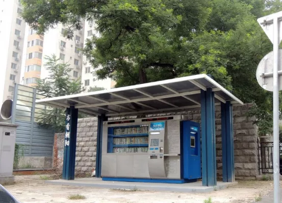
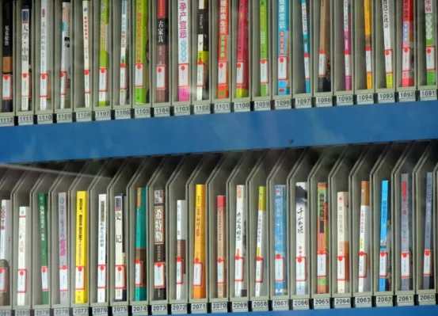

朝阳区的24小时自助图书馆！
发布时间：2013-7-19 17:13
阅读零时差 全天不封馆
自助图书馆24小时免费借书啦！
在朝阳区各个街道分布着40多个24小时自助图书馆。方便想读书的读者随时借书还书。读者只要在自助图书馆用二代身份证按照下列顺序（在身份证感应区域感应二代身份证→选择读者证服务功能→在入钞口处存入借书押金→从读者证出口处领取读者卡，并打印凭据。读者需要退卡时，需持办证时相关证件到朝阳区图书馆办理相应的退卡手续。）即可办好借书的手续。
这是长虹桥东北角的一个24小时自助图书馆,这是长虹桥东北角的一个24小时自助图书馆。
想想我们年轻时到图书馆借书，先要跑很远的路到图书馆。借书时先拉开小抽屉翻卡片，再抄下书名书号，单这一项有时就要花半个小时到一小时。拿着抄好的借书条再到柜台排队有时这也要花十几二十分钟，柜台里的服务员拿着借书条到书架群里去找书。经常还会遇到你要借的书已经被别人借走。于是你又要重新去翻卡片。这样的借书没几个小时是借不到的。看看现在的借书过程真是既方便又省时间。


朝阳区24小时自助图书馆
地址：朝阳区朝外金台里17号
服务热线：85992534